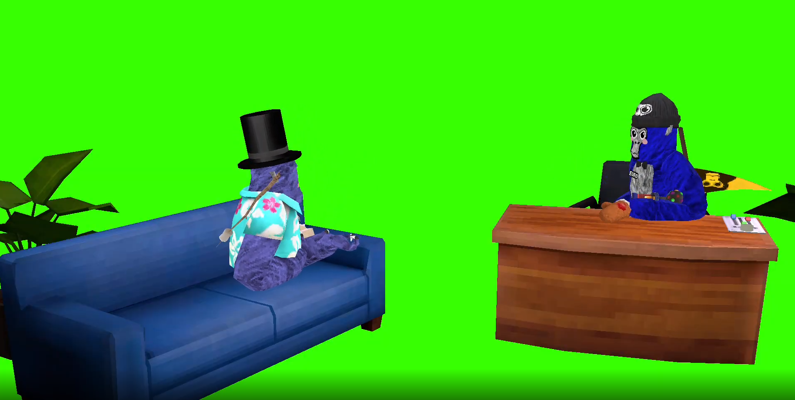
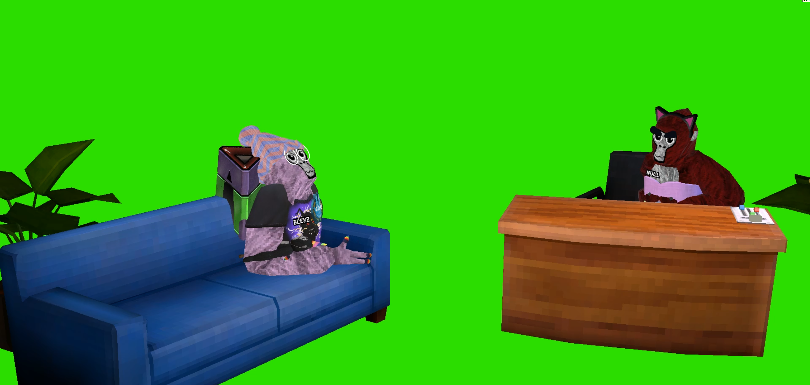
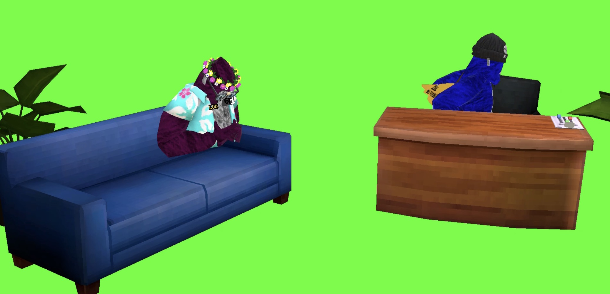

Interview med Gorilla Tag Creators
https://discord.com/invite/bgbZxFvEr8
Gorilla Tag blev lavet i 2021. Det er et af de mest populære VR* spil i verdenen.
Gorilla Tag er et meget socialt VR spil, hvor man kan mange ting, f. eks. fangeleg, gemmeleg og hangout.
En stor del af spillet er også, hvordan din avatar* ser ud, og der tilbyder spillet mange muligheder.
Man køber cosmetics* i spillet gennem en valuta, der hedder Shiny Rocks, som man kan få ved at logge på dagligt.
Spillet har et community*, som ikke er stort i Norden, men er bestående af nogle passionerede creators.
Nogle af de passionerede creators hedder OPB, LUD og Blexz.
Dem har jeg inviteret.
OPB 2.000+ følgere

Spørgsmål 1: Hvorfor startede du på Youtube?
Fordi i min klasse var der en 'trend' om at få Youtube kanaler, og jeg havde alid ønsket mig en, så jeg så det som min mulighed.
Spørgsmål 2: Hvad er dine mål?
Lige nu er det 10 tusinde abonnenter og dernæst er det 100 tusinde osv.
Spørgsmål 3: Hvordan fandt du på dit navn?
Det er min initialer. O.P.B.
Spørgsmål 4: Synes du, at SMC* er undervuderet eller overvuderet?
Jeg vil sige, at de er midt i mellem. Ikke over- eller undervuderet
Spørgsmål 5: Hvis du skulle stoppe, hvad var grunden så?
På grund af min klasse kender til min kanal, eller jeg ikke ser noget i det eller noget andet.
Spørgsmål 6: Har du nogen specifik redigerings stil?
Ja.
Spørgsmål 7: Har du nogensinde tænkt på at ændre din redigeringsstil?
Det har jeg. Men lige nu nej, jeg er tilfreds med min redigerigsstil.
Spørgsmål 8: Hvordan er din redigeringsstil? Kan du beskrive den?
Undertekster og baggrundsmusik
BLEXZ 3.500+ følgere

Spørgsmål 1: Hvorfor startede du på Youtube?
Jeg så andre youtubere lave videoer, og så tænkte jeg, at jeg også ville lave videoer.
Spørgsmål 2: Hvad er dine mål?
Lige nu er det 5.000 følgere og AA*
Spørgsmål 3: Hvordan fandt du på dit navn?
Jeg kedede mig en dag, og så tænkte jeg, at jeg ville finde på et fedt navn online, og så blev det bare BLEX. Men senere tilføjede jeg et Z, så det blev BLEXZ
Spørgsmål 4: Synes du, at SMC* er undervuderet eller overvuderet?
Jeg ville sige undervuderet. Det er flinke mennesker. Der er mange Discord servere til creators, men denne er unik.
Spørgsmål 5: Hvis du skulle stoppe, hvad var grunden så?
På grund af at jeg ikke ser noget i det mere, eller der sker et eller andet.
Spørgsmål 6: Har du nogen specifik redigeringsstil?
Ja på en måde, for hver slags video har jeg en bestemt stil.
Spørgsmål 7: Har du nogensinde tænkt på at ændre din redigeringsstil?
Ja.
Spørgsmål 8: Hvordan er din redigeringsstil? Kan du beskrive den?
Klip og alt for mange vine booms*.
LUD 1.500+ følgere

Spørgsmål 1: Hvorfor startede du på Youtube?
Fordi jeg kom i tanke om, at det eksisterede, og så gad jeg godt at lave noget. Så fandt jeg Gorilla Tag
Spørgsmål 2: Hvad er dine mål?
At få AA? eller 5.000
Spørgsmål 3: Hvordan fandt du på dit navn?
De første 3 bogstaver af mit navn. Random er fordi, at det er tilfældig content (@ludrandom).
Spørgsmål 4: Synes du at SMC* er undervuderet eller overvuderet?
Normalt. Det var engang hyped, men nu er de lidt dødt.
Spørgsmål 5: Hvis du skulle stoppe, hvad var grunden så?
For lidt motivation.
Spørgsmål 6: Har du nogen specifik redigeringsstil?
Ja. Ikke for 'brainrotty'*.
Spørgsmål 7: Har du nogensinde tænkt på at ændre din redigeringsstil?
Nej. Ikke lige nu.
Spørgsmål 8: Hvordan er din redigeringsstil? Kan du beskrive den?
Ikke for "brainrotty". Hvis du ikke kan lide den, så lad være med at se mine videoer
*
VR står for Virtual reality.
Avatar er din karakter.
Cosmetics er dine personlige tilpasninger.
Community er dine sociale forbindelser.
SMC er en discord server for små Gorilla tag Creators.
AA er et Creator program for creators som viser passion.
Vine Booms er en lyd effekt som mange bruger i deres videoer.
Brainrot er noget forfærdeligt.
Tak til OPB, LUD og Blexz for deres bidrag.
Tak fordi I læsste min artikel.